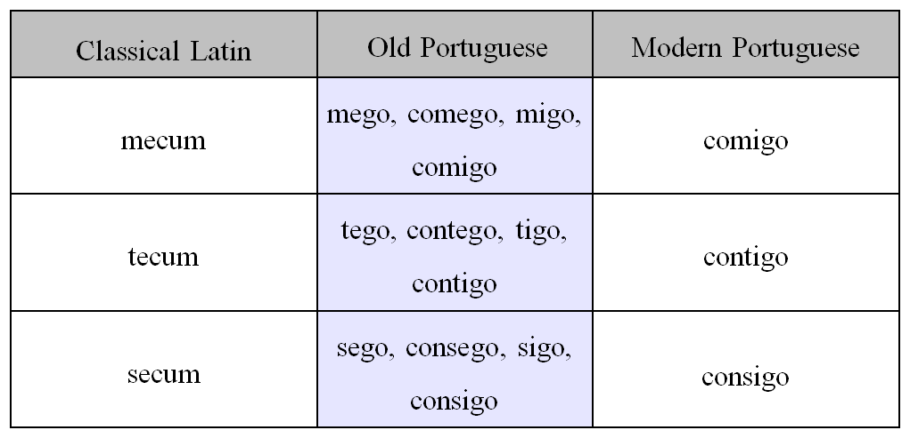

Galician-Portuguese was the spoken language in the western area of the Iberian Peninsula until mid-fourteenth century. Derived from Latin, it emerged progressively as a different language before the ninth century, in the territories of the old Kingdom of Galicia, which covered the regions of modern day Galicia and northern Portugal. In this sense, we can say that the word Galician-Portuguese designates not only a language, but also a phase in its development, which later would lead to the differentiation between present Galician and Portuguese languages due to political and sociolinguistic circumstances.
How did the Portuguese pronoun system change throughout the Late Middle Ages?
Portuguese, like most other Romance languages, came from Latin, or more specifically, an altered form of Lating called "vulgar Latin". The transition from vulgar Latin to the Romance languages was due to maany factors, notably relative geographic isolation of the different groups of language users and subsequent linguistic superimposures by linguistic subtrate languages. An example of the linguistic superimposure is the intensified stress accent superimposed upon vulgar Latin of the Iberian Peninsula by invading German races. Vulgar Latin, along the western coast of the Iberian Peninsula, which had less of the Germanic stress accent than anywhere else, grew into Portuguese. The exact date of this trasformation is unclear but the earliest documents in Portuguese appeared at the end of the 12th century and mark the historical beginning of Old Portuguese.
For four centuries, the language underwent amny changes, one of the most important being a marked intensification of the stress accent, which was represented by an increase in syncope found in verse and by the tendency toward greater word individuation. Toward the end of the 16th century, nearly all distinct characteristics of Old Portuguese disappeared, leaving the rough equivalent of the modern Portuguese spoken today.
For the diachronic variation study, we chose a sample of authors from five time periods used to divide our timeline. Using the work of Williams (1962), we marked up pronouns and categorized them, using Williams's standards, as "old" or "new". Then, we determined how accurate the claims made by Williams are by looking at the distribution of the "old" and "new" pronouns across the five time periods.
William's claim is that Old Portuguese appeared at the end of the 12th century and had completed its transformation into modern Portuguese by approximately the end of the 16th century. Our goal in looking at pronouns used in poetry of medeival Galician troubadors is to see if William's claims are represented in the distribution of pronouns across the poems.
The Galician-Portuguese poetic movement remains a rich cultural event in the history of the Iberian Peninsula. The troubadors and mistrels who authored the songs were greatly revered, as were their works. Therefore, the Portuguese used in their poems could be seen as representative of the language being used at the time. If anything, it is one of the most consistent collections of texts because it spans roughly three centuries during the evolution of the language into modern Portuguese. By tracking the use of archaic and modern pronouns in the poems, we can begin to understand the timeline of how the Portuguese language changed over time.
This, obviously, is just a scratch at the surface of language change. In this project, we only look at personal pronouns because they had quantifiable changes that could be easily recognized and marked. A more in-depth study might include other linguistic features, such as phonological features of orthography. We hope that this project might open the door for more research into this realm of study.
After formatting the poems in an XML document, the next step was to mark all the personal pronouns that Williams mentioned in his study. Below are charts taken from William's research.
In the texts, we used regex to mark all personal pronouns, modern and archaic, with the following tag:
<w ana="#pronoun"> pronoun </w>